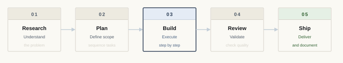

Process
Every project follows some version of this sequence. The steps aren't always clean, but a consistent structure prevents drift.

Understand the problem. Define what done actually looks like before anything else moves.
Define scope, sequence tasks, and make decisions early — before they become expensive to change.
Execute in steps. AI assists with structure, code, and copy — direction and quality decisions are mine.
Check against the plan. Cut what's inflated, fix what's broken, verify it does what it was supposed to.
Deliver and document. What was built, how it works, and why — matters for maintenance and handoff.
AI in my workflow
I use GitHub Copilot and ChatGPT across every phase — brainstorming, drafting, code review, and critique.
Final judgment on scope, direction, and quality is mine. Every output gets reviewed before it ships.
Generate options, challenge assumptions, explore directions fast.
Organize content hierarchies, outline documents, sequence tasks.
Cut inflated language, improve clarity, check tone consistency.
Write, review, and debug HTML, CSS, and JavaScript.
Find weaknesses in what I've built before calling it done.
Final decisions are mine. Every output is reviewed before it ships.